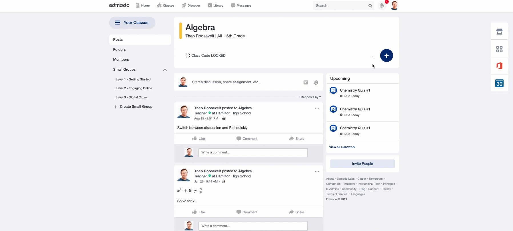
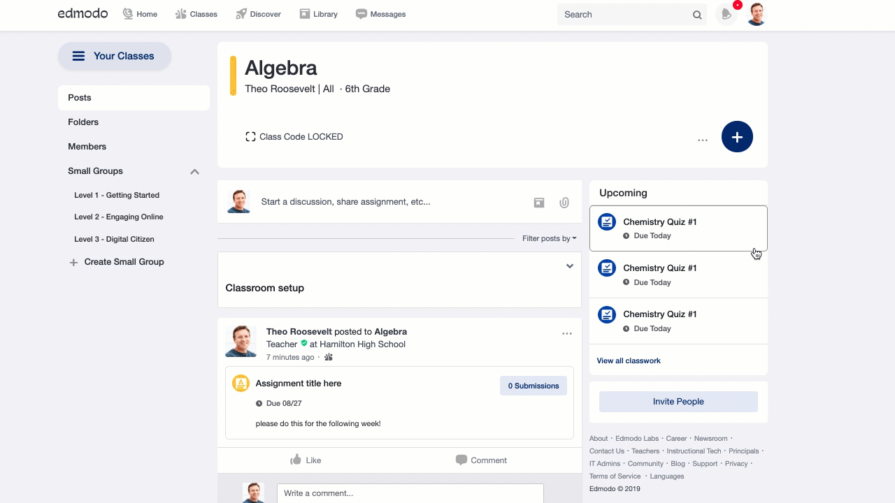
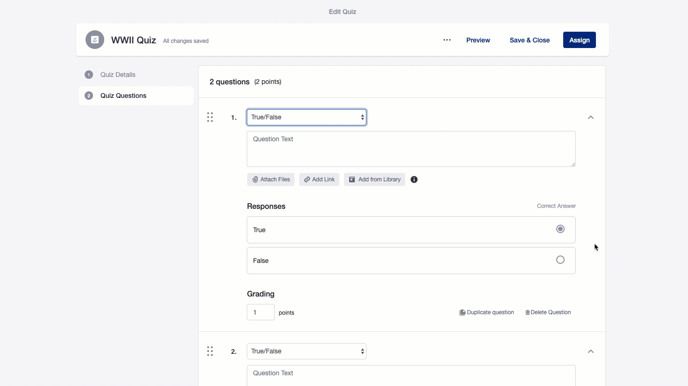
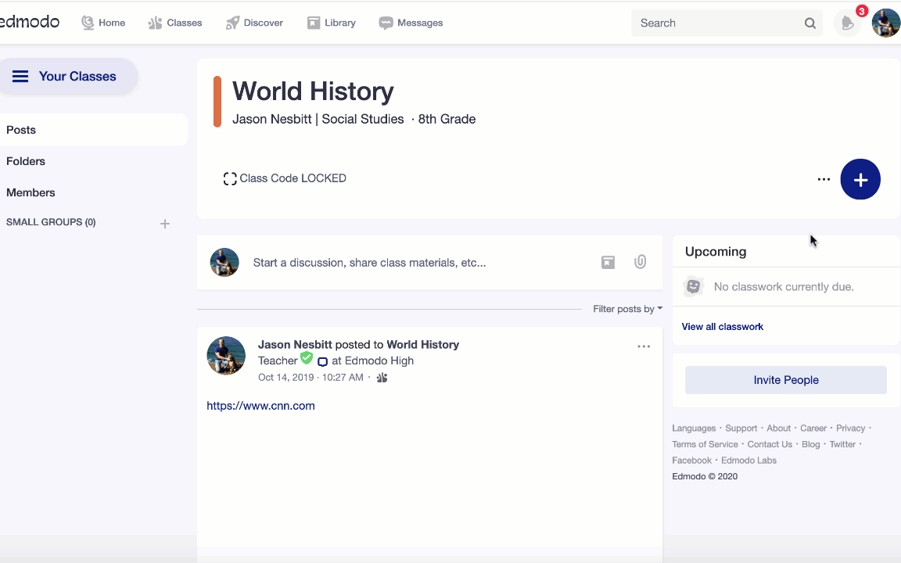
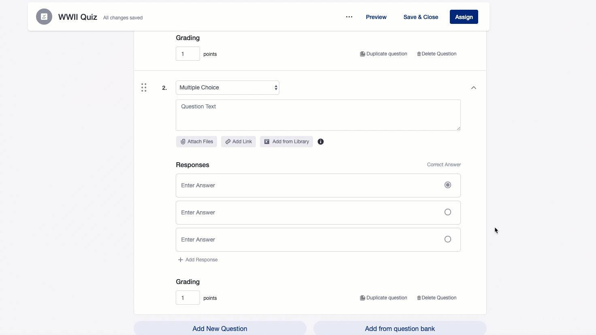
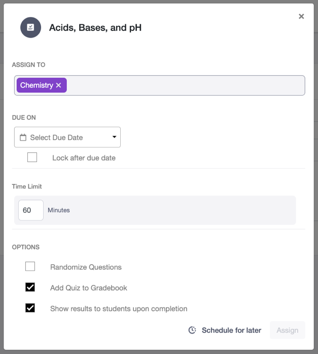

Pasul 1:
Selectați butonul Adăugați + situat în panoul de informații despre clasă din pagina grupului dvs.
Pasul 2:
Faceți clic pe Creați o temă din meniul derulant
Completați titlul sarcinii și instrucțiunile pentru sarcină
Faceți clic pe pictogramele Fișier, Legătură sau Bibliotecă pentru a atașa orice element la Atribuire.
Pasul 3:
Faceți clic pe Alocare pentru a deschide un meniu pop-up pentru a finaliza următoarele detalii înainte de a aloca sarcina: Alocați la (introduceți numele mai multor grupuri sau studenți individuali cărora doriți să le atribuiți direct sarcina)
Vă rugăm să rețineți că, dacă trimiteți o temă destinatarilor individuali de studenți, mai degrabă decât unei clase sau unui grup mic, numai dvs. veți putea accesa această misiune. Co-profesorii clasei dvs. nu vor putea vedea sau accesa această sarcină sau trimiterile elevilor.
Data de plată (setată făcând clic pe casetele de dată și oră respective)
Bifați caseta Blocare după scadență pentru a restricționa studenții să predea sarcina după scadență.
Pasul 4:
Bifați caseta Adăugare la carnet de note pentru a include scorurile elevilor în Cartea de progres a clasei / grupului.
Faceți clic pe Programare pentru mai târziu, care va trimite automat mesajul la ora aleasă. Asigurați-vă că fusul orar listat în setările contului dvs. este același pentru toți profesorii și studenții. După ce selectați data și ora de programare a atribuirii, apăsați Alocare pentru ao adăuga la coada de postări programate situată sub compozitorul clasei.
Pasul 5:
Faceți clic pe Alocați pentru a posta imediat (postările vor apărea în fluxul de postare în ordinea în care au fost trimise)
Mai jos puteti gasi aceasti pasi in videoclipurile urmatoare:
Pentru a crea un assignment care se va posta imediat.

Pentru a crea un asigment ce va aparea la o anumita ora

Pasul 1:
Selectați butonul Adăugați + situat în partea de sus a paginii dvs. Edmodo Class.
Pasul 2:
Faceți clic pe „Creați test” pentru a crea un test nou sau urmați aceste instrucțiuni pentru a încărca un test existent pe care l-ați încărcat anterior

Pasul 3:
Completați fila Detalii test:
Dă-i testului un titlu de test.
Opțional. Adăugați instrucțiuni pentru test pe care elevii le vor citi înainte de a lua testul.
Pasul 4:
Faceți clic pe fila Întrebări pentru test.

Pasul 5:
Selectați tipul de întrebare din meniul derulant. Opțiunile de tip de întrebare includ alegere multiplă, răspuns multiplu, adevărat / fals, răspuns scurt, completați spațiul gol sau potrivirea. Salt mai jos pe această pagină pentru a afla mai multe despre tipurile de întrebări din test.
Completați caseta de formular „Textul întrebării” pentru a adăuga solicitarea dvs. de întrebare.
Opțional. Folosind butoanele de sub Textul întrebării, puteți atașa fișiere sau linkuri la întrebarea dvs.
Notă: Puteți atașa imagini, videoclipuri, MP3-uri, PDF-uri, link-uri și mai multe tipuri de fișiere din Biblioteca Edmodo sau de pe computer.
Adăugați opțiuni de răspuns de răspuns. Tipurile de răspuns vor varia în funcție de tipul de întrebare
Pentru tipurile de întrebări cu opțiuni multiple și răspunsuri multiple, trei opțiuni de răspuns vor fi furnizate în mod implicit, dar puteți adăuga sau elimina opțiuni de răspuns.
Pentru a elimina o opțiune de răspuns, treceți cu mouse-ul peste ea și faceți clic pe pictograma „X” care apare în dreapta.
Pentru a adăuga o opțiune de răspuns suplimentară, faceți clic pe „+ Adăugați reîncărcare” în partea de jos a listei de răspunsuri.
Schimbați butonul radio de sub „Răspuns corect” pentru a seta alegerea corectă a răspunsului. Pentru întrebări cu răspunsuri multiple, setați mai multe răspunsuri corecte sub „Răspuns corect” bifând toate casetele de selectare care necesită opțiuni de răspuns corecte.
Tipul de întrebare Adevărat / Fals are doar două opțiuni de răspuns posibile, „Adevărat” sau „Fals”
Schimbați butonul radio de sub „Răspuns corect” pentru a seta alegerea corectă a răspunsului.
Întrebarea Completați spațiile libere necesită utilizarea „_” (punctele de subliniere) pentru a desemna unde ar trebui să apară spațiul gol în întrebare.
Setați răspunsul corect pentru fiecare gol în caseta formularului „Introduceți răspunsul”. Pentru Întrebări potrivite, trei perechi Întrebare și Răspuns vor fi furnizate în mod implicit, dar puteți adăuga sau elimina perechi Întrebare-Răspuns sau puteți adăuga opțiuni suplimentare de Răspuns distractiv.
Introduceți opțiunile de întrebare din stânga și perechile de răspunsuri corespunzătoare din dreapta.
Pentru a elimina o pereche Întrebare-Răspuns, plasați cursorul peste ea și faceți clic pe pictograma „X” care apare în dreapta.
Pentru a adăuga o pereche Întrebare-Răspuns, faceți clic pe „+ Adăugați reîncărcare” în partea de jos a listei Răspuns.
Pentru a adăuga răspuns distractiv suplimentar pentru a crește dificultatea întrebării dvs. de potrivire, faceți clic pe „+ Adăugați un răspuns suplimentar” sub secțiunea Răspunsuri suplimentare.
Opțional. În secțiunea Gradare, modificați caseta „puncte” pentru a ajusta valoarea punctului.
Întrebările adevărate / false, cu alegere multiplă și cu răspunsuri scurte valorează în mod implicit 1 punct în total, dar puteți seta acest lucru mai mare pentru ca întrebarea să merite mai multe puncte. O întrebare nu poate valora mai puțin de 1 punct.
Completați spațiile libere, iar întrebările de potrivire valorează în mod implicit câte 1 punct pe fiecare răspuns corect, dar puteți seta acest lucru mai mare pentru ca întrebarea să merite mai multe puncte.
Întrebările cu răspunsuri multiple valorează în mod implicit 1 punct pe fiecare răspuns disponibil, dar puteți seta acest lucru mai mare pentru ca întrebarea să merite mai multe puncte.
Rețineți că, cu întrebări cu răspunsuri multiple, se vor acorda puncte pentru fiecare răspuns corect selectat și pentru fiecare răspuns incorect care nu este selectat.
Pasul 6:
Puteți copia cu ușurință o întrebare pentru a copia o întrebare sau Ștergeți o întrebare pentru a o elimina.
Faceți clic pe „Duplicare întrebare” pentru a o copia pentru o editare ușoară.
Faceți clic pe „Ștergeți întrebarea” ștergeți-o din test.
Puteți adăuga mai multe întrebări folosind butonul „Adăugați o întrebare nouă” din partea de jos a listei de întrebări. De asemenea, puteți rearanja ordinea întrebărilor glisând întrebări sau adăugând o întrebare între opțiunile de întrebări existente.
Pentru a insera o întrebare nouă între două întrebări existente, treceți cu mouse-ul peste linia orizontală care separă două întrebări și faceți clic pe butonul „plus”]
Pentru a rearanja o întrebare, treceți cu mouse-ul peste pictograma „șase puncte” = lângă numărul întrebării, apoi faceți clic și trageți întrebarea la comanda dorită.
Pasul 7:
De asemenea, puteți reutiliza întrebări din testele anterioare pe care le-ați încărcat în Edmodo. Faceți clic pe butonul „Adăugați din banca de întrebări”, selectați întrebarea din lista pe care doriți să o adăugați și faceți clic pe „Adăugați la test”.
Pasul 8:
Selectați „Previzualizați” în partea de sus pentru a previzualiza Quiz-ul și pentru a-l vizualiza așa cum o va vedea un student.
Pasul 9:
Selectați „Închidere” în partea de sus pentru a închide editorul de teste. Testul dvs. va fi salvat automat în biblioteca Edmodo. Puteți atribui acest test din pagina dvs. de curs sau din bibliotecă în orice moment.
Faceți clic pe pictograma „trei puncte” three_dots.pngpentru a deschide un meniu cu opțiuni care vă permit să imprimați, să faceți o copie sau să ștergeți testul.
Selectați butonul „Alocare” pentru a trimite testul la cursul dvs. imediat. Salt mai jos pentru a afla mai multe despre opțiunile suplimentare de testare disponibile atunci când atribuiți testul unei clase.
Tipuri de intrebari:
a) Alegere multiplă: puteți crea întrebări cu un format de alegere multiplă pentru a răspunde, fără a limita numărul de opțiuni pe care le puteți prezenta elevilor

b) Răspuns multiplu: Nou în Edmodo este posibilitatea de a selecta tipul de întrebare Răspuns multiplu. Acest lucru permite profesorilor să seteze mai multe selecții de răspunsuri necesare pentru întrebări cu alegere multiplă.

c) Adevărat / Fals: De asemenea, aveți opțiunea de a crea întrebări adevărate / false. Pur și simplu introduceți afirmația și selectați dacă este sau nu adevărată sau falsă. Potrivire: tipul de întrebare potrivită vă permite să prezentați două rânduri de răspunsuri posibile pe care elevii vor trebui să le potrivească împreună.

Pasul 10:
Completați următoarele opțiuni de testare:
„ASIGNARE LA” - Selectați destinatarul clasei pentru Quiz. Dacă ați creat acest test din pagina dvs. de clasă, clasa va fi adăugată automat ca destinatar. Puteți căuta și adăuga clase suplimentare sau studenți individuali cărora doriți să primiți acest test.
„DATE ON” - alegeți o dată și o dată scadență pentru Quiz
Opțional. „Blocați după data scadenței” - bifând această casetă va bloca Testul după ce ați trecut data de scadență stabilită, iar studenții nu vor putea lua testul după ce această dată a trecut.
Opțional. „Limită de timp” - setați o limită de timp pentru Quiz, în câteva minute. După ce un student începe testul, acesta trebuie să răspundă la toate întrebările înainte ca timpul alocat să treacă.
Opțional. „Întrebări aleatorii” - bifând această casetă se va randomiza ordinea întrebărilor pentru fiecare student care ia testul.
Opțional. „Adăugați în carnetul de note” - bifând această casetă se vor adăuga automat testul și scorurile elevilor dvs. în Cartea de progres a clasei. Dacă uitați acest pas, îl puteți adăuga mai târziu.
Opțional. „Afișați rezultatele studenților la finalizare - bifând această casetă le va permite elevilor să-și vizualizeze rezultatele testului după trimiterea testului. Elevii vor putea să vadă scorul, rezultatele întrebărilor individuale, precum și răspunsul corect pentru fiecare întrebare.
Adăugați în carnet de note - bifați această casetă pentru a adăuga automat testul și scorurile elevilor dvs. în Cartea de progres a clasei. Dacă uitați acest pas, îl puteți adăuga mai târziu.
Selectați Alocare pentru a trimite testul imediat sau faceți clic pe „Programare pentru mai târziu” pentru a selecta data și ora la care acest test va fi trimis destinatarilor selectați.
